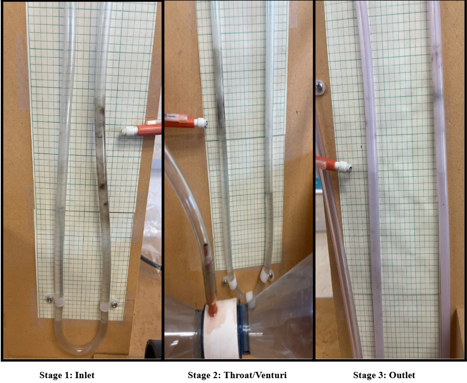

Overview
The purpose of this laboratory experiment is to demonstrate and verify Bernoulli's principle through practical measurement and calculation of airflow properties in a converging-diverging duct system, or venturi. This experiment investigates the relationship between fluid velocity and pressure in a variable cross-sectional area flow system using a shop vacuum as the main driving mechanism and water manometers for pressure measurement.
Methodology
The experiment was designed to isolate and measure the core variables of Bernoulli's equation within a controlled converging-diverging duct. Each stage was measured independently, with manometer readings taken at steady-state airflow. Readings were converted from raw water-column heights (in inches H₂O) to pressure values in lb/ft², then fed into Bernoulli's equation to solve for velocity at each stage.
Results were then cross-validated using the continuity equation. Any discrepancies between the two methods were analyzed to account for real-world factors including duct wall friction, air density variation, and instrument sensitivity.
Bernoulli's Equation
P1 + ½ρV1² = P2 + ½ρV2²
Where P = static pressure (lb/ft²) | ρ = air density = 0.002375 lb·s²/ft⁴ (sea level, standard day) | V = velocity (ft/s)
Continuity Equation (cross-validation)
A1V1 = A2V2
Where A = cross-sectional area (ft²) | V = velocity (ft/s)
Pressure Conversion — Manometer Reading to lb/ft²
P (psi) = h (inH₂O) × 0.036127
P (lb/ft²) = P (psi) × 144
Where h = pressure differential height read from the water manometer (in H₂O) | 1 inH₂O = 0.036127 psi | 1 psi = 1 lb/in², and 1 ft² = 144 in², so multiply psi by 144 to reach lb/ft² — the unit required by Bernoulli's equation
Measurements
Set Up
The venturi duct was mounted horizontally with a fan driving steady airflow through the converging-diverging section. Water manometers were tapped at three measurement points — inlet, throat (narrowest cross-section), and outlet — to capture static pressure at each stage. All measurements were taken after airflow reached a steady state.

Results & Findings
Measurements confirmed the inverse relationship between static pressure and fluid velocity across all three stages. The venturi (narrowest point) recorded the highest velocity and the lowest static pressure, consistent with both Bernoulli's equation and the continuity equation.
Discrepancies between Bernoulli-derived velocities and continuity-derived velocities were small and attributable to duct wall friction losses and minor air density variation at ambient lab conditions. These deviations reinforced the practical limitations of idealized fluid dynamics when applied to real systems.
As airflow is forced through the narrow venturi throat, velocity spikes dramatically — from 61.78 ft/s at the inlet to 147.1 ft/s at the throat — while pressure simultaneously drops to its lowest recorded value. This directly proves Bernoulli's principle: the faster the fluid moves, the lower its pressure.